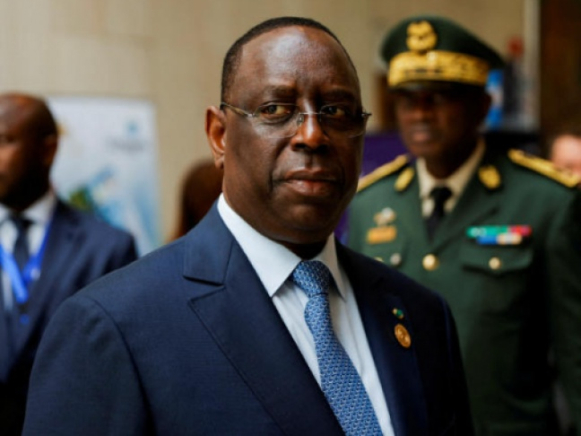

PROCÈS Gilbert DIENDERE: AUJOURD’HUI, LE VERDICT DE TOUS LES DANGERS

Il est désormais un peu comme chez lui à la Maca, la Maison d’arrêt et de correction des armées à Ouagadougou. En ce samedi de mai, jour de visite, Gilbert Diendéré reçoit comme d’habitude à l’ombre de son manguier. Sur sa table en plastique, un thermos de café, des tasses, du sucre. Le général a beau être en détention, il reçoit comme si de rien n’était. Et propose même de l’eau tempérée ou glacée – au choix –, qu’il va chercher dans son frigo personnel. Pour un peu, ses visiteurs oublieraient le mur d’enceinte hérissé de barbelé et les miradors dans leur dos. Plus loin, des chevreaux gambadent, des soldats rigolent. Quand ils s’approchent de lui, certains le gratifient d’un garde-à-vous. Certes, l’endroit n’a rien d’un Guantánamo. Mais voilà bientôt sept ans que le détenu le plus célèbre du Burkina Faso y est privé de liberté, coincé dans cette prison militaire décatie. Lui ne se plaint pas. Pas le genre de la maison. Il « supporte », dit-il. Moralement et physiquement. De fait, l’homme n’a guère changé. Toujours la même silhouette de grand échalas. Le même sourire timide, limite gêné, qui cache une détermination froide et une autorité naturelle qui en font, depuis des années, l’officier le plus redouté de l’armée burkinabè. Même en polo blanc et sandales, comme en cette matinée ensoleillée, Diendéré suscite la méfiance de ses compatriotes. La faute aux innombrables et basses besognes prêtées à l’ancien chef d’état- major particulier de Blaise Compaoré, un président qu’il a loyalement servi durant près de trois décennies.

actu en image
Le président Macky Sall a annoncé hier jeudi qu’il s’adresserait aux Sénégalais à la fin du dialogue national. Après sa visite au chef des Mourides lundi dernier pour, dit-il, lui réserver la primeur de ‘’grandes décisions qu’il va prendre très prochainement’’, cette annonce d’une adresse à la nation peut s’analyser comme partie intégrante de la stratégie du camp présidentiel pour reprendre la main dans un Sénégal sous haute tension politique depuis 20 bons mois.